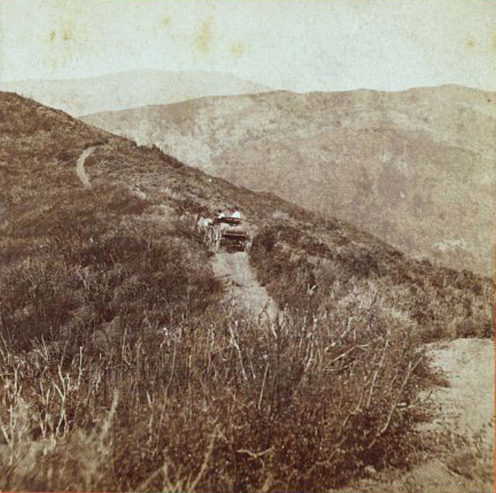
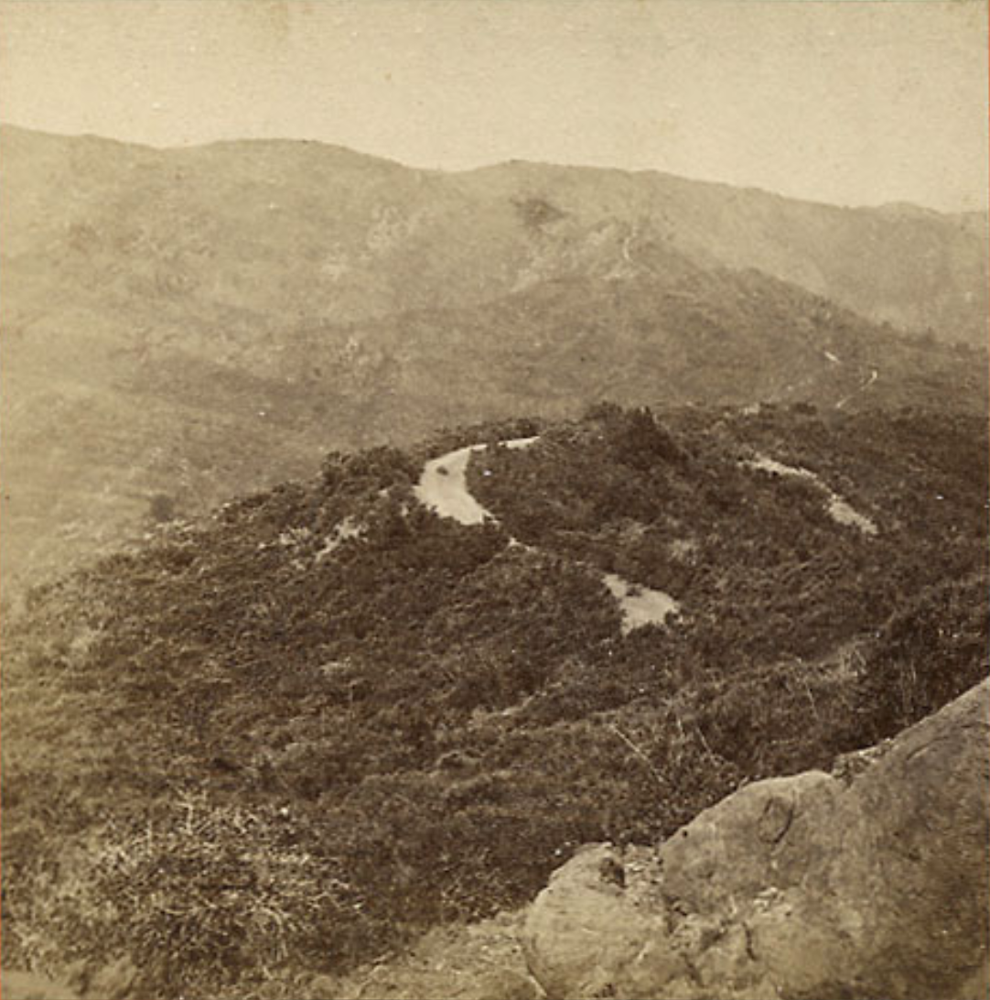
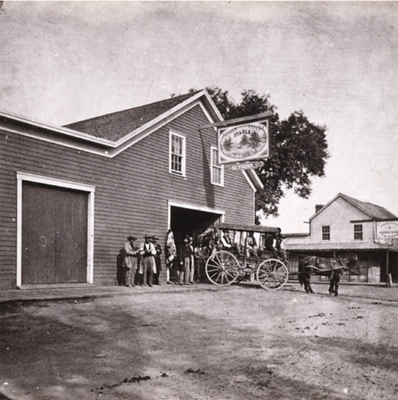
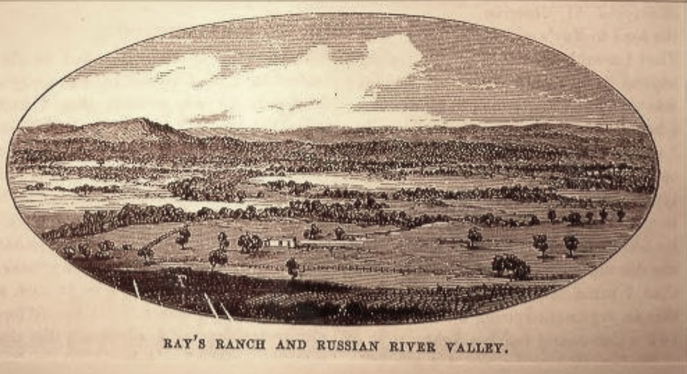
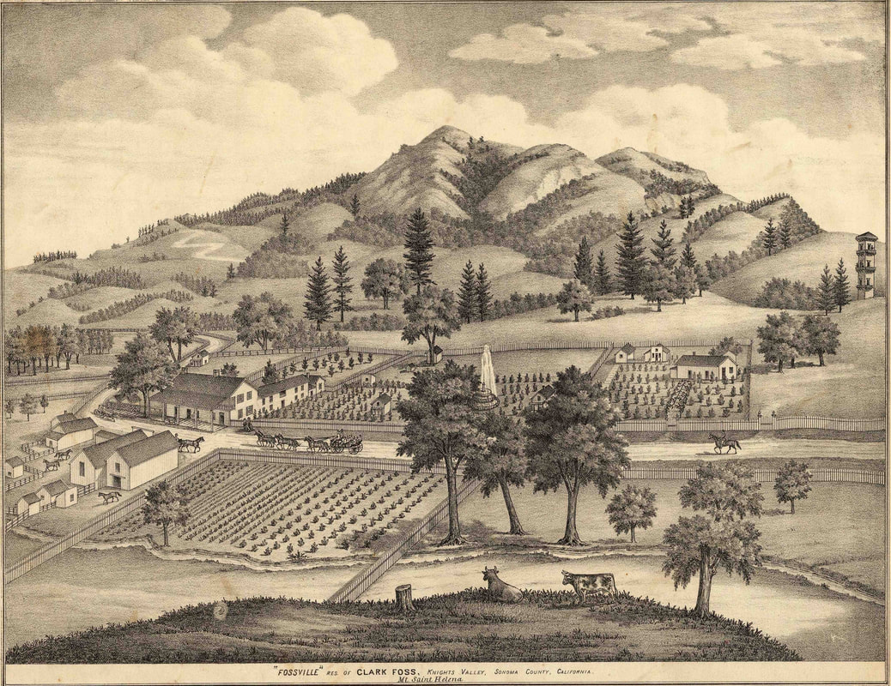

Clark Foss
The Most Famous Stage Coach Driver in the World!
© 2020 Hannah Clayborn All Rights Reserved
|
Before the railroad came to Healdsburg in 1871, travelers from San Francisco generally came by steamer through San Pablo Bay and up Petaluma Creek to Petaluma. From there many stage lines radiated out to different sections of Sonoma County.
Stagecoaches and their drivers provided some of the most colorful images of the last century. In his engagingly run-on style, Healdsburg historian Julius Myron Alexander apparently gave an eyewitness account when he described just how colorful they were: The old stage coaches were works of the carriage-makers' art, brilliantly painted, red, green or yellow, with striping of spokes and bodies; with a canvas-covered trunk and baggage rack behind and the driver's seat high above the boot in which the mail and express was stowed under the driver's seat. When hitched to four or six fine matched stage horses with the harness mounting of silver or brass fixtures with many white or red rings and a brilliantly colored tassel hanging from the cheek piece of the bridle, with the expert driver mounted on the box, dressed appropriately and wearing a ten-gallon, pearl-gray John B. Stetson hat, full gauntlet gloves with long braided lash whip in his right hand, mounting a series of silver ferrules on its pliable hickory stock, made a spectacle to cheer the heart and delight the eye.(1) Of all the great and daring stage drivers of that day, none was more renowned for his daring nor so famous as Clark Foss, who almost single-handedly put the stage route to the California Geysers on the world’s bucket list from 1860 to 1880. Capitalizing on a Natural Wonder
The Native American tribes had known and used the Geysers as a type of resort for centuries, maybe millenniums. Joel P. Walker and John Ransford were probably the first white men to explore the bizarre natural wonder in 1842.(2) The Geysers are located in the steeply rugged Mayacmas range of mountains, which separate Sonoma from Lake and Napa Valleys in northern California, about 1700 feet above sea level. Early recreational visitors are probably responsible for the misnomer "Geysers." These are not true Geysers, but steam fumeroles and black bubbling waters stinking of sulfur. Early visitors came by way of Knight's Valley to the foot of Geyser Peak, then on horseback by a narrow trail over the mountain. Upon reaching their destination visitors beheld a ground tinted white, yellow and gray with chemicals. The air itself seemed loaded with a steamy mixture of salts, sulfur, iron, magnesia, soda, and ammonia. All along the bottom of a wide ravine and up the sides of rugged hills, cracks and vents punctured the earth and through these steam hissed and inky black waters boiled. The larger vents and boiling pools each acquired diabolic names like "Witches Caldron" and "Devil's Wash Bowl". Some gave off sounds like a singing teakettle when they blew; another sounded like a puffing steamship, hence "Devil's Teakettle" and the 300-foot column of steam spewing from "Steamboat Springs". Visitors reported innumerable varieties of sound, which in the middle of the Nineteenth Century were described as huge tanks of boiling potatoes, the cob-cracking of a grist mill, the sigh of the wind, murmur of pines, or dash of waves, all in liquid, vibrating, tremulous tones.(3) Canvas tent and cabin lodgings were built at the Geysers as early as 1854. But it was Colonel A.C. Godwin, a merchant from the tiny town that later became Geyserville, who first established a real tourist hotel in that spot that so often reminded visitors of hell itself. Trying to run a hotel there must have been hellish as well, and not particularly profitable, because ownership changed almost yearly until 1866. Clark Foss was the fifth owner, but that was not how he became so fabled and famous. Foss was not the first driver to brave the dangerous trail to the Geysers in a horse-drawn vehicle either. R.C. Flournoy beat him by three days on May 15, 1861. Both notices appeared in the Sonoma Democrat, May 23, 1861: The heyday of the Geysers Resort was between 1855 and 1875. In the latter year 3,500 people signed the Hotel Register.(4) The steam plumes, boiling waters, and infernal stink amazed many tourists, like world travel writer and poet Bayard Taylor, who wrote of the Geysers:
The scenery is finer than that of the lower Alps, and the place is a mine of future wealth, and of thorough rejuvenation. Of the Witches’ Cauldron he writes: A horrible mouth yawns in the black rock, belching forth tremendous volumes of sulphurous vapor. Approaching as near as we dare, and looking in, we see the black waters boiling in mad, pitiless fury, foaming around the sides of their prison. Its temperature, as approximately ascertained by Lieut. Davidson, is about five hundred degrees. An egg, dipped in and taken out, is boiled; and were a man to fall in, he would be reduced to broth in two minutes. From a hundred vent-holes, about fifty feet above our heads, the steam rushes in terrible jets. I have never beheld any scene so entirely infernal in its appearance. These tremendous steam-escapes are the most striking feature of the place. The wild, lonely grandeur of the valley, the contrast of its Eden slopes of turf and forest, with those ravines of Tartarus, charmed me completely, and I would willingly have passed weeks in exploring its recesses. Other world-weary sightseers were just plain disappointed.(5) As Samuel Bowles, explained in the early 1860's: The Geysers are exhausted in a couple of hours. They are certainly a curiosity, a marvel; but there is no element of beauty;...like a three-legged calf, or the Siamese twins…once seeing is satisfactory for a life-time… They are a sort of grand natural chemical shop in disorder…You grow faint with the heat and smells; your feet seem burning; and the air is loaded with a mixture of salts, sulphur, iron, magnesia, soda, ammonia, all the chemicals and compounds of a doctor's shop. You feel as if the ground might at any moment open, and let you down to a genuine hell.(6) But no one it seems, not even the jaded visitor above, was ever bored, and few were disappointed by the stage driver who took over the route in the early 1860’s. The Weird and Wonderful "Geysers" Steam Fumeroles and the Geysers Hotel
A Yell to Wake the Dead
In the words of a younger stage driver, Bill Spiers, Clark Foss (often called "Old Chieftain" by his admirers) could handle six horses like you'd handle that many cats. He would lift them right off their feet and swing them around corners so fast you couldn't see the lead team...he'd run down the last hill with a yell to wake the dead. In 1878 the Independent Calistogan first bestowed the title "Colonel" on Foss and referred to him as one thereafter, despite the lack of any evidence that Foss served in the military.(7) That paper reported that Foss drove his six-in-hand as though four fiends were after him, directing them by his thundering voice as much as with his huge fists, and at the same time snapping his long whip with a shot like a pistol, echoing through the hills.(8) One of the more harrowing and most chronicled parts of the journey teetered over a narrow hilltop ridge known as the "Hog's Back". As Bowles described it: For several miles the road lay along ‘the hog's back,’ the crest of a mountain that ran away from the point or edge like the sides of a roof, several thousand feet to the ravines below; so narrow that...it was rarely over ten or twelve feet wide, and in one place but seven feet...and yet we went over this narrow causeway [with Foss] on the full gallop. The same traveler, describing that last steep descent into the valley of the Geysers with Foss said: The descent was almost perpendicular; the road ran down sixteen hundred feet in the two miles to the hotel, and it had thirty-five sharp turns in its course: "Look at your watch," said Mr. Foss, as he started on the steep decline; crack, crack went the whip over the heads of the leaders, as the sharp corners came in sight, and they plunged with seeming recklessness ahead—and in nine minutes and a half, they were pulled up at the bottom, and we took breath. Going back, the team was an hour and a quarter in the same passage.(9) Timid visitors hold him in mortal terror, reported another traveler in 1865. One lady, learning that he was to be her driver, jumped out of the vehicle, steadfastly refusing to ride behind such a reckless Jehu.(10) An early settler in Healdsburg remembered: There was a party of six or eight wealthy gentlemen from the East, doing this coast for pleasure, and they wanted to take in the Geysers in one day. Foss arranged a relay of horses for every ten or fifteen miles of the circuit, and took them from Napa, by Calistoga, to the Geysers, back by way of the hog's back to Healdsburg, Santa Rosa and Petaluma, in the day. The party had been on a sharp gallop all that time except for a short stay at the springs. He received a fabulous fee for this service, and no end of gloves, whips, and other souvenirs by mail and express.(11)  On the way to the Geysers, Hog's Back, Carleton Watkins #2306, c. 1868. (Library of Congress)
 On the way to the Geysers, Hog's Back, Carleton Watkins #2357, c. 1868. (Phil Nathanson on carletonwatkins.org).
King of Drivers
Due to the international renown drawing visitors to the Geysers stage route, Foss was often said to be the most famous stage driver in the world. Many marveling reporters returned to their home states and countries to sing his praises. According to one writer he was the "King Of Drivers", and Robert Louis Stevenson later wrote of him in The Silverado Squatters.(12) Another reporter rhapsodized about Clark Foss in the Boston Journal in 1869: Not only is he an unequaled driver, but he is a man of genius and a philosopher. In person he stands six feet two inches in his stockings, is as strong as a giant, has the voice of a tragedian, weighs two hundred and thirty, and is as fine a specimen of muscular development and vigor as ever went forth from the hills of the Granite State. Those of us who will never have the chance to make our own observations, must experience the exquisite terror of riding behind Clark Foss through that reporter’s eyes. Glancing carefully at his load, and taking a swift but sure look at his tackling to see that all is secure, [Foss] cracks his whip, shouts to the horses and away we go down the steep mountain side. Trees fly past like the wind; bushes dash angrily against the wheels; the passengers hold on as if for dear life; the ladies shut their eyes and grasp the arm of some male passenger; and speed down the declivity with lightning rapidity, the horses on a live jump, and General Foss [Now he is promoted to General] whip in hand, cracking it about their heads to urge them on. The effect at first is anything but pleasant. At every lurch of the coach one feels an instinctive dread of being tossed high in the air and landed far below in a gorge, or, perchance, spitted upon the top of a sharp pine. If a horse should stumble or misstep, or the tackle snap, away we should all go down the precipice.(13)  Clark Foss Livery Stable on the southwest corner of North Street and West Street (now Healdsburg Ave.). Lawrence & Houseworth Photo "All Aboard for the Geysers", 1864. (Society of California Pioneers)
Media Superstar
Joseph Clark Foss was a very early example of an international "superstar" created by media hype. Over the course of his career he inspired and entertained celebrities as diverse as Bayard Taylor, P. T. Barnum, and countless journalists. But writers often seemed to parrot each other, adding kindling to Foss’s blazing reputation. Robert Louis Stevenson, for instance, never rode with, or even met Foss, basing his account on hearsay and a short phone conversation from his hotel in Calistoga.(14) Some historians have inevitably done the same, copying each other’s errors. The result can be seen in the gravestone placed on Clark Foss’s grave in St. Helena, bearing the wrong birthdate and place of birth.(15) It is possible that Foss added to the confusion himself, unwilling to have his true origin traced. Contrary to many published sources, Joseph Clark Foss was born in 1812 in Barrington, Strafford, New Hampshire. He was the second oldest of five children born to Sally and Ralph Foss. There he married Lydia Anne Hattie Hutchinson (born in Maine in 1822). Sometime after 1845, they relocated to Troy, New York. In 1850 Clark was working as a grocer, but by 1855, he could list no occupation on the census records. In a Troy, New York directory in 1858 he is a locktender, which is a worker in charge of the air locks used in caissons during bridge construction. If Clark actually worked inside these airlocks, under water, his job was a very dangerous one.(16) The family emigrated to California in 1859, settling in Dry Creek Valley, where Clark became a hog farmer. By that time they had four surviving children, Helen L. (1845–1863), Emma J. (1851–1918), Henrietta (b. about 1855), and Charles Clark (1856–1930). The first record of a Clark Foss livery stable is June of 1861 on the southwest corner of North Street and West Street (now Healdsburg Ave.). Originally the livery just provided horses, but that first month Foss made an offer to send the ladies through in "vehicles." Later that summer his carriages for the ladies were running regularly with a "spike team" and a special brake attached.(17) From this stage line and his superlative handling of both horses and passengers, Foss built his worldwide reputation. His special relationship to his lady passengers would later be remarked upon. Foss’s oldest daughter, Helen, married Carlos Charles Herman Fitch (1842–1925), son of Sotoyome Rancho owner Henry Delano Fitch, on Oct. 12 1862. Helen died July 25, 1863, of unknown cause. The timing might suggest childbirth, although the death toll in frontier towns from numerous diseases was always high. Charles Fitch may have gone into business with Foss on the stage line and hotel at that time and was a partner until 1867, when he was replaced by James Shafer. For a short time, about 1863-64, Lydia Foss, Clark’s wife, actually ran the Geysers Hotel.(18)  Earliest known illustration of Ray's Station, later known as Foss's Station, 1859. (Sonoma County Library)
 "Fossville" from Thomas H. Thompson's Historical Atlas Map of Sonoma County, 1877, p. 12.
Fossville
Travelers bound for the Geysers in this era came by steamer to Petaluma, and then by stage to Healdsburg. Foss’s livery would provide horses or carriages to the next stop at Ray’s Station (later Foss's Station), where they would get fresh horses. This tavern and stable was on the northern end of Alexander Valley, off Red Winery Road, seven miles from Healdsburg. From there a toll road, built by Geysers owner A.C. Godwin in 1862, went around Geyser Peak and over Hog's Back Ridge to the Geysers springs. In about 1865 Foss founded "Fossville" in the southeastern end of Knights Valley. The little settlement replaced Ray's Station as a rest stop and consisted of a post office, an immense barn with a great watering trough, and a long, low, "snow-white" cottage with verandah nestled in an encircling valley of green hills. Although some parties came equipped to camp out along the way, by 1865 some travelers stayed overnight there if they had arrived late in the day. In 1880 a writer called the secluded valley the beau-ideal of sequestered loveliness. The Fossville Hotel was said to have 25 guest rooms, the large main room boasting red plush draperies and crystal chandeliers. Famous visitors who signed in at the hotel register include P.T. Barnum's famous midget, Tom Thumb, Ulysses S. Grant, Richard Henry Dana, H.S. Crocker, Mark Hopkins, J. Pierpont Morgan, and W.R. Hearst.(19) Typically Foss would pick up his passengers, famous or otherwise, in Healdsburg, already wearied by the long journey from San Francisco. From there they would set off on the eight-mile ride to Fossville, sometimes by moonlight. Revived by a fine dinner and good night's rest at Foss's hotel, they would have the stamina for the tortuous but breathtaking 12-mile road to the Geysers the next morning. That trip took about two and a quarter hours if the stage was not harassed by bandits.(20) Although Foss’s reputation continued to grow, and gifts of tribute (like a silver cup from an appreciative San Francisco lady for his service driving her 316 miles in 1866) in these early years Healdsburg boosters actually downplayed the dangers and rigors of the journey: …It is remarkable how nicely California’s dust shakes from ribbons and clothes…Here I will introduce to the reader the Giant Clark Foss, accomplished and world-renowned stage driver and owner of the stage line from Healdsburg to the Geyser Springs…They are no boxes, but open carriages, with good springs, and three seats nicely covered with robes.…At six o’clock in the morning you take the coach, more properly the family carriage, at Healdsburg for the Geysers, Eight miles beyond we reach Foss Station, a house prettily situated at the foot of the hills. Many people prefer coming on the station to stay over night on their way to the Geysers. It is a good house, kept by Mrs. Foss… Mr. Foss made the trip the morning I came over in less than three quarters of an hour… The danger of the road is misrepresented for dramatic affect. The road is no more dangerous than the road from San Francisco to the Cliff House…In 1861, I think it was, Mr. Foss laid out present road to the Geysers from Foss Station, making the first trip with a wagon and horses, driving over ground densely covered with underbrush. I asked him if he had upset on his first trip and he replied that if he had he would never have made a second trip. He has never met with an accident on this road… Neither is there any danger in the last hill ("drop" they call it,) you descend. It is a smooth road winding down the hill, making thirty-five turns, and some extraordinary short ones, in the two miles descent. I was told that if Mr. Foss felt in the humor he would drop us down the hill in twelve minutes. He dropped the Colfax party down in ten and a half minutes.(21) Because his stage served many of the quicksilver mines in the area, bandits, or "highwaymen", regularly approached Foss. Reports claim that Foss developed great skill and daring in eluding them.(22) After being safely deposited at the Geysers Hotel, visitors then had to brave the rugged attraction itself. And then, as if that were not enough, there was always the return ride behind Clark Foss. All of this excitement and exhaustion could be had for $50 round trip per passenger, which included an evening meal at the Fossville Hotel.(23) Clark Foss and his Healdsburg route met stiff competition in August 1868 when A.H. Connelly opened a livery in Calistoga and initiated a stage run to Fossville, 18 miles away.(24) The famous road from Healdsburg over the Hog's Back, said to be the most beautiful and interesting of all the roads, was challenged when a toll road was built from Knight's Valley.(25) The competition was not only between stage lines, but between the communities of Calistoga and Healdsburg for the much-coveted tourist dollars that the route generated. Each town’s cause and claims of superiority were championed by its local newspaper.(26) In 1868 Foss himself started a run from Calistoga and tried to keep both stage lines running while the newspapers argued about which route was faster, safer, and more beautiful. In 1870 the Russian River Flag indignantly claimed the following: In a circular setting forth the attractions of the famous Geysers Springs...the statement is made that the time from Healdsburg to the Geysers is six hours...[These Calistoga gentlemen] know that the distance is only twenty miles and that the route is run by the fastest stage driver in the world, Clark Foss. The assertion...looks like a willful misrepresentation to divert the travel from the Healdsburg route. It is a mountain road and has many steep grades, yet Foss' common time is four hours from Healdsburg to the Geysers, and when he is in a hurry he drives it in three hours.(27) The Healdsburg route with its memorable Hog’s Back, fell into disuse when Clark Foss moved his stage route to Calistoga for good after the railroad was put through to Napa Valley in 1869. He entered into a partnership with A. H. Connelly, and in 1872 they built a toll road from Calistoga over the mountains by way of Pine Flat to the Geysers Springs. A later newspaper account erroneously stated that Foss and his family moved to Calistoga at this time. Foss did move to Calistoga, but it turns out his family did not go with him.(28) On the Road with Clark Foss
A Troubling Personality
There had been intimations of a troubling personality when Foss was often quoted speaking about women. His stage route started by transporting ladies and he clearly had a special interest in them. In 1866 Clark was fined $96 for assault, but no specifics are recorded. In September 1869 came this report: Foss is a student of human nature, and the region of the Geysers is his world. To travel with him without fear, or rather to delight in the perilous journey is sure to win his admiration. The woman who claps her hands with delight when descending from the summit with break neck speed, is, in his eye, a true lady. “There is a noble woman for you," says Foss, when opportunity offers away from her hearing; “there, sir, that is what I call a true lady. How easy she sits upon her seat! She didn't brace herself, hold on with both hands and yell!—Not much!' But the women who are frightened get little sympathy from Foss. He is kind, and tries to reassure them, but still he has his opinions." Of such a one he shakes his head sorrowfully, and says quietly, ‘She won't do…I tell you ladies and gentlemen, there's nothing in this world like a fine woman, and next to her comes a fine horse; as for first class men—umph, where do you find ’em?(29) Despite the fact that Foss had moved to Calistoga, in November 1869 the Healdsburg papers reported on a large attractive house he was building in Healdsburg. There his wife and daughters would remain when Clark moved on.(30) The marital separation would not become public until October 1871, when Clark humiliated his family by publishing a series of advertisements over three months in the papers announcing that he would not pay the bills of his wife and family and severing his connection to them.(31) Just days before the advertisement was published, Lydia and Clark's daughter Emma married John A. Martin in Healdsburg, perhaps to escape the scandal.(32)
Fortunately for Lydia, the marital break coincided with the arrival of the S.F. & N.P. Railroad to Healdsburg. In December 1871 with Clark’s humiliating advertisement still running in the newspapers, another article informs us: Mrs. Foss (separated wife of the great Foss of the Geysers) has her large and elegant house full, chiefly of railroad officials. Lydia continued to operate her property successfully as a boarding house or hotel. Elsewhere in the same issue we learn that Clark Foss has sold all his property and had returned to a former house in Maine. He sold the old Foss Station, eight miles from Healdsburg to C.H. Northcutt at that time. The newspaper further informs us that Foss has not lived with his family, who are residents of Healdsburg "for some time."
The next week, however, the papers corrected their reports, stating that Clark Foss had not gone back to Maine to stay, and he had not sold his stage line. Finally we learn a year later that the couple is divorced and Lydia is awarded alimony of $80 a month.(33) In March 1873 Clark Foss deeded his wife three acres on one side of Fitch St. for $1. I believe this is the elegant structure, run as a hotel or boarding house, that was described by a visitor to Healdsburg two months later: …the finest house and grounds were those of Clark Foss (the American Jehu), situated in the eastern part of town. I noticed in his yard to me a strange kind of locust In bloom. The blossom of it was of pinkish-purple color. And only two weeks after that description was published, Lydia deeded the three-acre property to her daughter, Emma M. Martin, for the unquantifiable amount Love.(34) |


|
Riding High
Clark Foss was riding high in 1870, just reaching his pinnacle of renown when he hosted P.T. Barnum. Other writers have claimed that the midget Tom Thumb, one of Barnum’s main attractions, actually gave Foss pointers about how to liven up his act with colorful clothing and language. I cannot confirm that, but in June 1870, P.T. Barnum did give Foss a moniker that would last for the rest of his life. Barnum and "Foss." On the return from the Geysers, "Foss" the noted stage driver, gave the showman a sample of fast driving. He had a fine team of six horses, and he made a section of five miles 125 turns in the road in 23 minutes. Barnum holding on to the seat with one hand, and his hat in the other, was the very picture of terror. "Foss" he cried, "I say Foss!" But Foss was deaf as an adder, and answered only with a sharp crack of his long whip, and dashing around the curves his horses fairly flew down the heights. Barnum saw a deep gully ahead—the horses dashing towards it at all speed, and he braced himself for a heavy thump. crying out—the motion of the vehicle separating his syllables—"L-o-o k o-u-t, Foss !" but at just the right moment Foss' voice was heard, and the animals slackened at once their speed, and the gully was passed gently and safely. The showman, once satisfied that he was safe, enjoyed the ride hugely, and arriving at Calistoga Springs, sat down and wrote on a card and gave to the great driver the following: Admit the bearer, Foss, free to all and every one of the exhibitions and shows in which I have any interest. This pass is binding on all my heirs and assigns forever. Foss is the great Jehu of America. P. T. Barnum.(35) Jehu was a king of Northern Israel circa 841 BCE, described in the Bible, who gained renown for wild chariot driving around his kingdom, which he attributed to his zeal for the Lord. The name "Foss" itself took on meaning. Western Sonoma County stage driver Lew Miller was referred to as the "Foss of the Coast."(36) Perhaps to drum up publicity a la Barnum, Foss won a race he staged between a race horse and one of his team horses, reportedly 11 years old, in Calistoga.(37) After a decade on the Geysers route, each reporter, journalist, or celebrity seemed unanimous in praise, if not downright adulation of Foss. But just as with our modern media, what goes up, so often must come down. The backlash began in 1870, with less flattering reports. In one article stage driver Hank Monk in the Lake Tahoe area was compared favorably to Foss, the reporter praising Monk as Much more modest and appreciative than that immensely overpraised egotist of the Geyser route, Clark T. Foss, who is his peer in all the niceties of exact and vigorous driving.(38) In 1871, at the same time as Foss’s very public split with his family, he received a scathing review by progressive journalist and poet Marian V. Churchill, writing for the Sacramento Daily Union. Given that there was rivalry between various cities and stage lines at this time, Marian’s assessment, humorous, insightful, and passionate, still has the ring of truth. Therefore I let her speak. …Thence by rail until we found ourselves at Calistoga. There a night's rest in one of the cozy cottages that make the place so celebrated in California, as a Summer resort, fortified us against the perils of the mountain ride with Foss, of which travelers tell so much. All night phantom precipices, goblin chasms, and specter roads winding among them, haunted our dreams. 5 o clock A. M. summoned us to the realities of a poor breakfast, a four-horse stage, and the veritable Foss himself. In these stages the seat of honor is beside the driver; probably because the driver makes it so. At any rate, there is always a scramble for it, and Foss told us if he had a "spite agin a feller, he always put him on the back seat to punish him." It was our fortune—and we thought it good on starting out—to sit "like Mercury new lighted" in the favored position. Foss cracked a long whip right and left, and his horses started on a full run down the Napa valley. We were reminded that we were a little apprehensive of something, by a little admonition from him, "Don't hang on! Don't brace your feet! Sit up as though you had a backbone and swing with the wagon. I put a man on the back seat t'other day for bracing his feet." We "sat up" and "swung," and didn't "brace," but did look at Foss and talked to him, and are fully prepared to give our opinion concerning him. He is a great, burly brute, with less human consciousness than his stage-coach, and less soul than his horses. He is a Californian monstrosity, that ought to be caged and kept on exhibition in Woodward's Gardens, in the lowest corner of the "Animal Department" and when he dies and goes to "his own place," its only outlook ought to be upon the fields of the equine elysium, where he may be obliged to behold forever the horses, murdered by his cruelty, flinging their glorified heels and tossing, their beautiful manes in all the bliss that celestial pastures can bestow. We don't mean to take this matter of punishing Foss out of the hands of the authorized Judge; but we should like to be in the judge's place a little while when that man dies. From what we had read and heard, we expected to see in him one of those rough diamonds of the far West, many of whom really we found there; men that beneath their rude manners and uncultured phrase, carry heads full of generosity and kindly sentiment and tenderness; real noblemen knighted by nature. We saw instead a cross-grained, selfish beast. A creature who maltreats the animals who gain his livelihood, because they are mute and incapable of protesting against his brutality. On the whole route from Calistoga to the Geysers, which this man owns, there is not a horse but would shame an honest man to drive. They are mere living skeletons of horses, with swollen legs and backs scarred and seamed by the harness and whip. They are driven until they die, lame and bleeding and panting, at a full run up mountain and down, with rough words under the perpetual flourish of the the whip that brings blood at every stroke. In rare intervals of momentary pausing, gasping breath, forced out like deep groans, comes back to you, and great tears—no one need smile; they were larger and as pitiful as any human tears that ever fell—dropped from their protruding eyes to the ground. If any one has a heart to enjoy beautiful scenery while riding after agony, our advice to him is, "go to the Geysers, with Foss, and take the front seat of the coach, where you can see it all." The man said he had "two or three wives round the country somewhere; they didn't like his style, so they fell out. He didn't use to care when one left, but now he was gettin kinder old like, and ’t'want so easy to get a new one; 'specially one he'd have. Them he'd have, wouldn't have him. and them'd have him the devil wouldn't have" We thought of Jim Bludso, who had—"One wife in Natchez under the hill, And another one here in Pike.'' But Foss would never make a Jim Bludso. Jim stood by his boat until the "last galoot was ashore," and died himself; but if Foss'stage should take a turn down the mountain precipice, he would jump out and let the passengers take care of themselves. There's the difference between the two men. He said, "Newspaper writers all over the country write me up big, I hear, but somehow they forget to send me their papers" He was promised a Sentinel whenever it "wrote him up" and that promise shall now be most religiously kept. Miss Churchill was equally unimpressed with the Geysers… It is torture to get to them, and there is nothing inspiring or beautiful or pleasant about them after getting there. One can say he has seen them, and that is all the good he gets. Marian V. Churchill(39) Robert Louis Stevenson conveyed more hearsay accounts about Foss’s treatment of his horses: …Wonderful tales are current of his readiness and skill. One in particular, of how one of his horses fell at a ticklish passage of the road, and how Foss let slip the reins, and, driving over the fallen animal, arrived at the next stage with only three. This I relate as I heard it, without guarantee.(40) Journalist Marian V. Churchill (see above) called Clark Foss...a Californian monstrosity, that ought to be caged and kept on exhibition in Woodward's Gardens, in the lowest corner of the "Animal Department"...Woodward's Gardens was a large conservatory/zoo/museum on Mission Street in San Francisco.
Baldy Green: Put Up or Shut Up
Meanwhile Foss was keeping up the publicity stunts a la Barnum. In August 1872 the Petaluma newspapers described a ride to the Geysers with stage driver Frank Brodt that beat Foss’s record, careening from the summit of the mountain to the Geysers Hotel in nine minutes, a distance of two miles and a descent of 1,900 feet. On October 17 the Healdsburg paper printed an official challenge: We find the following challenge from the great driver Foss in the Calistoga Tribune. It having been stated in some of the Sonoma county papers that the drive from the summit down the grade (two miles) to the Geysers, has been made in seven minutes, I will wager one thousand dollars to one hundred dollars that it has never been done, and that no man ever beat my time over the same road. I will further bet one thousand dollars to one hundred dollars that I will make the same drive, with six horses and passengers, in a shorter time than any other man in the State or out of it. Clark Foss On October 31, this challenge, reprinted in countless California newspapers, received an answer: To the Editor of the [San Francisco] Chronicle—Sir In your issue of the 16th instant Mr. Clark Foss challenges any driver in or out of the State of California, $l,000 to $100 that he will make better time down the Sonoma Grade with the same team. l am here in the field to accept said challenge, and if Mr. Clark Foss wishes to raise said bet $2,000 or $5,000 pro rata, it would suit the undersigned. By depositing his forfeit with the Bank of California or Wells, Fargo & Co., my money is ready. It is put up or shut up. Baldy Green. Hamilton, Nevada Baldy Green is introduced as an old and popular Nevada stage-driver, well known all over the coast, and now a resident ribbon-slinger of White Pine county. On November 7, Clark Foss published his final reply: Calistoga, Oct., 29th, 1872. If Mr. Baldy Green, or any other man, wishes to accept my original proposition. or challenge, I am prepared to make the required deposit in the Bank of California. The first is to drive against the time claimed by the opposition stage party, of seven minutes down the old Geyser grade of two measured miles, from the Geyser Hotel, with six horses and a load of eight passengers. The second is to drive against me over the same grade and distance with six horses and a load of eight passengers, each man to drive his own team and carry the judges and timers. Unless parties wish to accept this proposition as stated above, I don’t care to have any back talk. Respectfully, Clark Foss The Healdsburg paper wryly annotated this article saying: …We think it would be exceedingly difficult to find timers and judges to take charge of that job on the conditions prescribed. In the event of a grand smash-up, and the sending of said timers and judges to their final reward, there would be no chance for an appeal to the California Supreme Court for a new trial—the case would be hopeless. The last record I can find of this imagined contest is a published jibe from Foss’s old business partner James Shafer who bet A thousand dollars to a hundred that Clark Foss will never drive against Hank Monk, Baldy Green or H. C. Ward, down the Geyser grade.(41) 
Mortality Cracks Its Whip
In almost every account in the first decade of Foss’s career as a stage driver, each reporter would also repeat the mantra that he had not had a single accident. The first recorded accident on the Geysers route came after Foss had moved to Calistoga. On the old Healdsburg Road Foss had made it one of his feats to lead a team of horses off the beaten track up a steep hill called the Sugar Loaf. Another stage driver in Foss’s employ tried the same feat with less skill or less luck. On October 31, 1869, the stage from Foss Station to the Geyser Springs carrying five passengers was upset on Sugar Loaf Hill and the passengers and driver precipitated down the canyon. One man and the driver, named Guinn, were both seriously injured. The rest escaped with slight bruises.(42) The Calistoga papers reported an accident on the Healdsburg-Geysers road run by Foss’s successor on the route, Emerson A. Bostwick, in June 1872. The account specified only that the stage was upset on the "Hog’s Back," throwing out the passengers, injuring several— one lady severely. It went on to note: …This road has always been considered a dangerous one, so much so that Foss, one of the most skillful drivers in the world, abandoned it for the new road from Calistoga, which is a much safer and more pleasant route. The Foss & Connelly coaches have been running over this road for the past three years, and not the slightest accident has ever happened. In its reply, the Healdsburg papers refuted any serious injury during this incident, saying their town could boast that there had never been a stage accident fatality on the old Healdsburg route to the Geysers.(43) At this bend in the road Clark Foss probably had more on his mind than the problems of his competitors. After his divorce from Lydia in 1872 and relinquishing ownership of the large house on Fitch Street in Healdsburg, he was free again. He wasted little time. In May 1873 he made a trip to Sacramento to see his betrothed, a Mrs. Bigsby. The next month he is busy sprucing up his house at Fossville, installing pictures, carpets, and giving it all a new coat of paint. It was ready for his wedding to Mrs. Hattie Bigsby on July 14, 1873. By November he was purchasing lumber to enlarge his Fossville Hotel.(44) Just as he had forged a partnership with his competitor A.H. Connelly when he relocated to Calistoga a few years earlier, Foss brokered a consolidation with the stage line from Cloverdale to the Geysers, Kennedy and Van Arnam, in June 1874. Although Bostwick’s Healdsburg line remained independent, passengers could now buy a through ticket all the way from Calistoga to Cloverdale via the Geysers.(45) It was shortly after this merger that human fallibility and mortality finally cracked its whip on the world-wide reputation of Clark Foss. The first accounts of the terrible accident on June 29, 1874, were confused and contradictory, and reporters complained about the difficulty of getting information. But all agreed that one woman was comatose with a fractured skull; others were injured. On Independence Day the Santa Rosa newspaper gave a full account: Accident to Clark Foss’ Stage. Tuesday afternoon Clark Foss left Calistoga with a six-horse coach and passengers for the Geysers, and had proceeded to the dividing ridge between Napa and Knight’s Valleys, when one of the lead horses caught the lines under his tail and became unmanageable. The other horses then took fright and began to run. Foss for a time reined them well, remarking to a passenger who was on the box that they were getting a little the best of him, but all would be right. They were on a down grade at the time, and when in a full run one of the wheels of the coach collided with a boulder in the road and fell to pieces. The stage was then dragged some distance on three wheels, when, striking a pile of rocks, the whole was wrecked. Mrs. Wiley, of Calistoga, and her three children, with two gentlemen, occupied the inside of the coach. The collar bone of one of the children was broken, and another had its arm fractured. The men and the youngest child (a babe) escaped with slight Injuries. Mrs. Wiley sustained severe injuries about the head, her skull, it is said, being fractured. Foss was badly bruised and injured internally. One man was severely cut about the throat. All were taken to the Knight’s Valley House [Fossville], and the lady is said to be in a very critical condition. Of course the stage was demolished. All parties seemed to be very reticent about giving information concerning the accident, and the above are all the particulars we could get. For them we are mainly indebted to Hy Hill, the driver of the Santa Rosa and Calistoga stage.(46) An added dimension to this tragedy is that the seriously injured woman was the wife of D. J. Wiley, a former Calistoga Roadmaster and a practicing attorney. As a correspondent for the Napa Register, using the nom de plume, Bret, Wiley had been waging a war of words against a new road being built by Healdsburg men to Pine Flat, to take advantage of the boom in the Quicksilver Mines there. Until that time the only route to Pine Flat was a toll road built by Foss and his partner A.H Connelly from Knights Valley to the Geysers. Any serious accident on this road, as occurred on June 29, would be unwelcome publicity. This may account for the reticence of the injured to speak to the press.(47) All of the injured were cared for by Foss and his new wife at the Fossville Hotel. Mrs. Wiley lingered, apparently still unconscious, until July 11. Death of Mrs. D.J. Wiley The following note revived from a Calistoga subscriber this morning, brings in the sad intelligence of the death of Mrs. Wiley and also corroborates the statement made by a correspondent in last week’s Register with reference to the stage accident. Mrs. Wiley, who was severely injured by the accident which happened recently to Foss’ stage near Calistoga, died on Saturday night, July 11. She was taken to Mr. Foss’ house at the time of the accident, and remained there until her death. Mr. and Mrs. Foss were untiring in their attention to her and received the commendations of the entire community for their ceaseless care and endeavor to make the sufferer comfortable. The accident was one entirely unavoidable, and was the result of the breaking of a wheel, and no other cause. From Dr. Nichell of St. Helena, who was in town this morning, we learn that Mrs. Wiley died from inflammation of the spinal cord. The doctor says the rest of the injured are recovering rapidly.(48) Other writers have claimed that another passenger, perhaps a child, was maimed for life, but I can find no report of that at the time. Foss, if severely injured, made a speedy recovery, as he was seen in Healdsburg at the end of July as full of vim as ever.(49) It seems that the accident did not initially slow Foss down. Just one month after Mrs. Wiley died, he was busy improving and reopening his old road from Healdsburg to the Geysers. That Fall he built an addition to his Fossville Hotel and bought another tract of land in Knights Valley intending to open a "pleasure resort."(50) The effort by the Napa Register to portray the accident as "unavoidable," thereby protecting both the toll road to Calistoga and the lucrative reputation of its star stage driver, apparently worked. In December 1874 the Santa Rosa paper complained about the bad press it received from Napa about an accident on the stage line from Santa Rosa to Cloverdale: When the accident happened to Foss’ stage, some months ago, by which Mrs. Wiley lost her life, the Free Press was mum about blaming Foss or his line, and did not intimate that people “would take chances of getting their necks broken” if they traveled with him.(51) Although Foss kept on driving, the affects of the accident may have changed his course. In March 1875 Foss sold his lease on his Calistoga stable, and all of his livestock and hay to William F. Fisher. Two months later A.H. Connelly retired, dissolving their partnership.(52) If Foss himself was transforming into a sedentary hotelkeeper, his fame as a stage driver in the rest of the nation and world was just getting started. As one astute observer noted, with a satirical sneer, in 1876 while discussing Easterners’ view of the West and Foss: …the Eastern journalist is entirely at his ease. When he lets himself loose on the magnificence of California magnates he is in his glory. He is now engaged in raising to the giddy pinnacle of newspaper notoriety old Foss, the crack stage driver on the Geyser road. This distinguished individual, as seen through the windows of Eastern sanctums, is an influential personage who “has retired from business.” He condescends to live in a neat villa, from which be can look along the most dangerous portion of the route he traversed full many a time and oft without mishap. The walls of his residence are ornamented with a collection of whips presented to him by numerous admirers. Some of these whips are exceedingly unique in design and many of them are costly. One presented by William C. Ralston is a tasteful piece of workmanship. It is mounted with gold and richly set with jewels, estimated to be worth $lO,OOO. It is unfortunate that the talented journalist who furnished this information to his readers forgot to add that the whip was inclosed in a quartz case ornamented with brilliants; that the National Guard was commissioned to carry the trophy to the Geysers; that the presentation was made by the Governor of the State, and that the event was honored by a general closing of the banks and an adjournment of the stock boards. Furthermore, that Mr. Foss is a graduate of Harvard College, that be is a steady and valuable contributor to several scientific magazines, and an honored member of the Academy of Sciences. Furthermore, that he has written a treatise on political economy, delivered a Fourth of July oration, slain a grizzly bear with a fruit-knife, and fought a duel with double barreled shotguns at ten paces. It speaks ill for the moral and social status of the Eastern Jehu that the fact of a California stage driver being able to spank his grandson with a $10,000 whip should be deemed worthy of newspaper comment.(53) Foss’s son, Charles Clark Foss, took over the stage route as chief driver in 1877, and at the same time he and his son expanded into agriculture in Knights Valley. The owners of the Sonoma County stage routes now seemed to get on famously, with Charlie Foss driving from Fossville to the Geysers Hotel, their partner Van Arman and Kennedy manning the leg from Cloverdale to the Geysers, and Bostwick still holding down the Healdsburg to Geysers leg, via Alexander Valley and the Pine Flat quicksilver mines.(54) Most writers have attributed Foss’s semi-retirement as a driver to an aversion related to his terrible accident; a second look makes that less likely. Foss still carried passengers from Pine Flat to his Alhambra Hotel, the pleasure resort for families he built on the new land he purchased in Knights Valley, about one mile from Fossville. It would seem that his focus was on these hotels and his lucrative 20-mile toll road to the Geysers, reportedly charging 50 cents a horse. But Foss would step up to the driver's seat for celebrities or old acquaintances. In December 1875 Foss drove Baron Rothschild and his party to the Geysers in a pelting rain storm, without so much as an umbrella between them.(55) Col. C. L. McArthur rode with Clark Foss in May 1878, noting that… He came from West Troy twenty years ago, where he once worked for L. I. Collins. The Fosses gave up their long-time stage office next to Cook’s Saloon in Calistoga at the end of that year. And this is also the year Foss is first referred to as Colonel, the honorific that would follow him all the way to his obituary.(56) 
End of the Road
Foss began selling off his land in 1882 when he sold his Knights Valley farm to J.W. Adams. The year 1883 was another turning point for Clark Foss, a time when both his body and marriage failed him. In the Spring, reports of severe rheumatism kept Foss in bed, and were concurrent with reports of the sale of 100 acres to his second wife, Hattie, for $4,000. That summer Foss’s youngest daughter, Mrs. Hattie (Henrietta J.) Stone came from her home in Oakland to care for him, suggesting that his wife was not there, and that the estrangement from his daughters was over. In June another daughter, Mrs. Emma Martin, visited from San Francisco.(57) On July 4, 1883, Foss put an advertisement in the newspapers disowning his wife Hattie, who had "left his bed and board without just cause or provocation." In style and content it was similar to the humiliating ad that he punished his first wife with in Healdsburg a dozen years before. At the same time there is a notice that Foss "sold" his Calistoga land to his son Clark, for the price of "love and affection." In November of 1884 Foss gave his son one-half interest in the stage company and stock.(58) Joseph Clark Foss, variously known as the Great Foss, King of the Drivers, Col. Foss, Old Chieftan, and the Great Jehu, passed through this stage of mortality at his Fossville home near Kellogg on August 25, 1885, and was buried at St. Helena Cemetery. His old friends at the newspapers reported: On Tuesday last, at about 11 o’clock, Clark Foss died at his home in Calistoga, after many months of illness. He had long been gradually losing strength, and during several days his death was expected at any time. In his sickness he occasionally suffered a great deal, and medicine had little effect, as his afflictions were incurable. While this was known to the attending physician, a post mortem examination of the body was made by Dr. Gardner Tuesday afternoon, to ascertain all the complications in the case that had so long baffled his skill. An extraordinary condition of the body was found to exist, and there had not been the slightest chance of recovery from the beginning of his illness. During the last few hours of life, Mr. Foss lay unconscious as to what was transpiring about him, and was free from pain.(59) The Calistoga newspaper eventually ran an obituary, and that biography supplied some of the misinformation that has been handed down over the years. The Healdsburg newspaper is more accurate. By the time of his death some newspapers no longer claimed he was the most famous stage driver, saying that he was surpassed only by Hank Monk. It added: It was only a short time before the death of Mr. Foss that he related a few facts in connection with his labor on the road in question—how he narrowly escaped the loss of his life on two occasions; that he was then reckless and foolish, he said, and that he would not if well again drive even once over the road, in the way he very often did years ago, for the sum of $500. He fairly shuddered when talking about it.(60) 
Postcard showing stage driven by Charlie Foss, Clark's son, c. 1905 (jonosko)
I have not discovered anything about the origin or fate of Clark Foss's second wife Hattie. His first wife, Lydia, came to Calistoga to live with her son Charles after Clark Foss died. Lydia Foss died in December 1897 and had asked to be buried next to her daughter Helen Foss Fitch in Healdsburg’s Oak Mound Cemetery. Charles continued to run the Calistoga-Geysers line until at least 1910 and was always noted as a careful, slow driver. He ran a ranch near the Geysers and later came with his wife, Hattie Proctor Foss, to live with their two children in Healdsburg at the corner of University and Tucker Streets. Charles died in 1930.(61)
By 1913 passengers to the Geysers rode R.T. Bruce's dependable Stanley Steamer "autobus" over much improved—if much less thrilling—roadways.(62) Clark Foss was a skilled daredevil and showman who, we discover, held woman and horses in roughly equal esteem. To a few he seemed a sadistic brute, a Californian monstrosity. To others he was a mythical hero, a genius, and philosopher. His contemporaries, unwilling to use the brake down the steep grade of their runaway adulation, declared him the Most Famous Stage Coach Driver in the World. Later, more conservative writers slowed to the more credible title, World Renowned Stage Driver. Like the riders Clark Foss admired most, nearing the end of this biographical journey, I will sit up and swing and I will not brace, but rather plunge headlong into the inky hyperbole that characterized his colorful career, and call him Clark Foss: the Most Famous Stage Coach Driver in the World! Prove me wrong, if you will. But until then, I don’t care to have any back talk. 
Endnotes
1. Dr. William C. Shipley, Tales of Sonoma County, (Santa Rosa: Sonoma County Historical Society, 1965), pg. 6. 2. Rich Cartiere, "Joel Pickens Walker, Pioneer of Pioneers", in Russian River Recorder,, Spring, 1985, Issue 29, pg. 1. 3. Munro-Fraser, History of Sonoma County, pgs. 29, 30. Bowles, Across the Continent, pgs. 280-282. Richardson, Beyond the Mississippi, pg. 524. 4. Munro-Fraser, History of Sonoma County, pgs. 29, 30. 5. William H. Brewer, Up and Down California in 1860-1864 (Berkeley and Los Angeles: Univ. of California Press, 1949) pg. 231. 6. Samuel Bowles, Across the Continent, (Springfield, Mass.: Samuel Bowles and Co., 1865), pgs. 279, 280. and as reprinted in Sacramento Daily Union, Volume 30, Number 4573, 17 November 1865. 7. The first mention of "Col. Clark Foss" that I have found is The Weekly Calistogian, Volume I, Number 21, 15 May 1878. 8. Kay Archuleta, The Brannan Saga, (San Jose: Kay Archuleta, cr. 1977), p.74. 9. Samuel Bowles, Across the Continent, (Springfield, Mass.: Samuel Bowles and Co., 1865), pgs. 279, 280. 10. Albert Deane Richardson, Beyond the Mississippi, (New York: American Publ. Co., 1869), p. 522. 11. Samuel Maxwell, "Early Healdsburg Memories", in Tribune, 26 March 1908. (1: 5). 12. Dutton, They Left Their Mark, pg. 85, 86. Stevenson at Silverado, The Life and Writing of Robert Louis Stevenson in the Napa Valley, California, 1880 (Fresno: Valley Publishers, 1974) p. 31, 32. Munro-Fraser, History of Sonoma County, p. 31. Stevenson, Silverado Squatters, London, Chatto, & Windus, 1906, p. 13. Independent Calistogan, 26 Aug. 1885 (3) and 2 Sept. 1885 (3). Tribune, 30 Dec. 1897, (biography of Mrs. Clark Foss). Boston Journal 31 Aug. 1869 (as reprinted in Russian River Flag 23 Sept. 1869 (3:3). 13. Boston Journal 31 Aug. 1869 (as reprinted in Russian River Flag 23 Sept. 1869 (3:3). 14. Stevenson, Robert Louis, Silverado Squatters, London, Chatto, & Windus, 1906, p. 13. 15. Findagrave.com: b. 1825 Maine, died Aug. 25, 1885, Kellogg Sonoma County, buried St. Helena Cemetery, inscription: Clark Foss 1825—1885 World Renowned Stagecoach Driver. The inscription and mistaken date and place of birth lead me to speculate that this headstone was placed long after his death, and repeated the errors of several journalists. 16. ancestry.com, Foss Tree by Ray: Clark Foss, b. 1812 Barrington, Strafford, New Hampshire, d. 25 Aug. 1885, Kellogg; parents Ralph and Sally Foss, Barrington Strafford, New Hampshire; Siblings: (Clark second oldest) Jeremiah Joseph, Asenath, John Locke, Joseph Ralph; wife: Lydia Ann Hattie Hutchinson b. Maine 1822, children: Helen L. Foss 1846–1863; Emma M.J. Foss (1851–1918); Charles Clark Foss (1856–1930). 1850; Census: West Troy, Albany, New York; Roll: 474; Page: 142B, Source Information: 1850 West Troy, Albany, NY Clark, 30 grocer N.H., Lydia A. 28 b. N.H.; Helen 5, N.H., Julia 3, N.Y. 1855 Census: New York, State Watervliet, Albany, New York, Clark, 35, no occupation, N.H., Lydia 32 b. Maine, Helen 9, borne New Hampshire, Emma 4, b. Albany; Henrietta 6 mos. b. Albany; Elizabeth Barlow niece 5, b. New Hampshire; [database on-line]. Provo, UT, USA: Ancestry.com Operations, Inc., 2013. 1858 City Directory, Troy, New York, Joseph Clark Foss, locktender, 147 Broad St., Ancestry.com. U.S. City Directories, 1822-1995 [database on-line]. Provo, UT, USA: Ancestry.com Operations, Inc., 2011. 17. Independent Calistogan, 26 Aug. 1885 (3). Tribune, 30 Dec. 1897, (biography of Mrs. Clark Foss); Joan Perry Dutton, They Left Their Mark, Famous Passages through the Wine Country (St. Helena: Illuminations Press, cr. 1983) pg. 85. 1860 Census: Mendocino, Sonoma, California; Page: 465; Family History Library Film: 803069: Joseph Foss, 40, farmer, NH., Lydia, 37, Maine, Helen, 14 N.H., Emma 10, NY, Henrietta 5, NY, Charles 3, NY. Livery notice: Daily Alta California, Volume 13, Number 4126, 3 June 1861. Livery advertisement: Daily Alta California, Volume 13, Number 4185, 2 August 1861. Sonoma Democrat, Volume IV, Number 40, 18 July 1861. 18. Daily Alta California, Volume 19, Number 7045, 8 January 1867. findagrave.com: Helen L. Foss Fitch, New Hampshire 1845— 25 July 1863 Oak Mound cemetery; married Oct. 12 1862 to Carlos Charles Herman Fitch (1842—1925). 19. California Farmer and Journal of Useful Sciences 14 July 1865. Russian River Flag 2 May 1866. Sacramento Daily Union, Volume 30, Number 4573, 17 November 1865. Independent Calistogan 2 Sept. 1885 (3). Albert Deane Richardson, Beyond the Mississippi, (New York: American Publ. Co., 1869), p. 521. Munro-Fraser, History of Sonoma County, pg. 29, 30. Dutton, They Left Their Mark pgs. 85-90 (and addendum from original manuscript left out in printing, see author). Thompson, Robert A., Historical and Descriptive Sketch of Sonoma County, California (Philadelphia: L.H. Everts and Co., 1877), pg. 12, 19. Archuleta, The Brannan Saga, pgs. 74, 75. 20. Richardson, Beyond the Mississipi, p. 521. 21. Daily Alta California, Volume 19, Number 6316, 30 June 1867. 22. Archuleta, The Brannan Saga, pg. 75. 23. Dutton, They Left Their Mark, pgs. 86, 87. 24. Daily Alta California, Volume XX, Number 6716, 5 August 1868. 25. Munro-Fraser, History of Sonoma County, p. 30. 26. Russian River Flag, Volume I, Number 30, 10 June 1869. Daily Alta California, Volume 21, Number 7064, 23 July 1869. 27. Russian River Flag, 28 April 1870 (3:3). 28. Tribune 30 Dec. 1897 (obit. Mrs. Clark Foss). Independent Calistogan 2 Sept. 1885 (3).Connelly & Foss Road: Russian River Flag, Volume IV, Number 36, 18 July 1872. Sonoma Democrat, Volume XV, Number 42, 27 July 1872. Sonoma Democrat, Volume XV, Number 42, 27 July 1872. 29. Sonoma Democrat, Volume X, Number 27, 13 April 1866, People vs. Clark Foss. Assault; fined $96. Russian River Flag, Volume I, Number 45, 23 September 1869. 30. Russian River Flag, Volume I, Number 52, 11 November 1869. Sonoma Democrat, Volume XIII, Number 6, 13 November 1869. 31. Russian River Flag, Volume III, Number 50, 26 October 1871. Russian River Flag, Volume III, Number 49, 19 October 1871. Russian River Flag, Volume IV, Number 5, 14 December 1871. Russian River Flag 9 November 1871 Russian River Flag, Volume II, Number 47, 6 October 1870. 32. Daily Alta California, Volume 23, Number 7861, 2 October 1871 (John A. Martin). Sacramento Daily Union, Volume 42, Number 7301, 7 October 1871. 33. separate items in Russian River Flag, Volume IV, Number 4, 7 December 1871. Sonoma Democrat, Volume XV, Number 9, 9 December 1871. Russian River Flag, Volume IV, Number 5, 14 December 1871. Daily Alta California, Volume 24, Number 8294, 11 December 1872. 34. Sonoma Democrat, Volume XVI, Number 23, 15 March 1873. Sonoma Democrat, Volume XVI, Number 30, 3 May 1873. Sonoma Democrat, Volume XVI, Number 33, 24 May 1873 35. Marin Journal, Volume 10, Number 14, 18 June 1870. 36. Sonoma Democrat, Volume XIV, Number 31, 13 May 1871. 37. Russian River Flag, Volume III, Number 48, 12 October 1871. 38. Morning Union, Volume 10, Number 1476, 23 September 1871 (Grass Valley). 39. Sacramento Daily Union, Volume 42, Number 7349, 2 December 1871. 40. Silverado Squatters, Robert Louis Stevenson, London Chatto & Windus: 1906, p. 13. 41. Russian River Flag, Volume IV, Number 42, 29 August 1872. Stockton Independent, Volume XXIII, Number 48 25 September 1872. Russian River Flag, Volume IV, Number 49, 17 October 1872. Russian River Flag, Volume IV, Number 51, 31 October 1872. Morning Union, Volume 12, Number 1819, 31 October 1872. Russian River Flag, Volume IV, Number 52, 7 November 1872. Russian River Flag, Volume V, Number 5, 12 December 1872. 42. Stockton Independent, Volume XVII, Number 81, 3 November 1869. 43. Russian River Flag, Volume IV, Number 30, 6 June 1872. Sacramento Daily Union, Volume 43, Number 6605, 3 June 1872. 44. Russian River Flag, Volume V, Number 27, 15 May 1873. Daily Alta California, Volume 25, Number 8486, 22 June 1873. Russian River Flag, Volume V, Number 37, 24 July 1873. Russian River Flag, Volume VI, Number 3, 27 November 1873. 45. Russian River Flag, Volume VI, Number 31, 11 June 1874. Russian River Flag, Volume VI, Number 34, 2 July 1874. 46. Sonoma Democrat, Volume XVII, Number 39, 4 July 1874. Other accounts of the accident: Sacramento Daily Union, Volume 47, Number 7252, 2 July 1874. Russian River Flag, Volume VI, Number 34, 2 July 1874 47. Napa Register (Weekly), Volume 11, Number 9, 20 September 1873. Russian River Flag, Volume VI, Number 16, 26 February 1874. Pine Flat toll road: Russian River Flag, Volume VI, Number 35, 9 July 1874. 48. Napa Register (Weekly), Volume 11, Number 52, 18 July 1874. Other accounts: Russian River Flag, Volume VI, Number 36, 16 July 1874. Weekly Butte Record 18 July 1874. 49. Russian River Flag, Volume VI, Number 38, 30 July 1874. 50. Napa Register (Weekly), Volume 12, Number 3, 8 August 1874. Russian River Flag, Volume VI, Number 47, 1 October 1874. Sonoma Democrat, Volume XVII, Number 52, 3 October 1874. 51. Sonoma Democrat, Volume XVIII, Number 10, 12 December 1874. 52. Foss buying horses Dixon: Sacramento Daily Union, Volume 1, Number 16, 11 March 1875. Foss & Connelly: Russian River Flag, Volume VII, Number 18, 11 March 1875. Russian River Flag, Volume VII, Number 21, 1 April 1875. Daily Alta California, Volume 27, Number 9178, 20 May 1875. Sonoma Democrat, Volume XVIII, Number 31, 22 May 1875. 53. Santa Barbara Weekly Press, Volume VIII, Number 16, 14 October 1876. 54. Russian River Flag, Volume IX, Number 10, 11 January 1877. Russian River Flag, Volume IX, Number 20, 22 March 1877. 55. Sonoma Democrat, Volume XVIII, Number 31, 22 May 1875. Russian River Flag, Volume VII, Number 31, 10 June 1875. Toll road: Sonoma Democrat, Volume XIX, Number 37, 1 July 1876. Sonoma Democrat, Volume XX, Number 16, 10 February 1877. Baron Rothschild: Sonoma Democrat, Volume XIX, Number 7, 4 December 1875. 56. Russian River Flag, Volume IX, Number 20, 22 March 1877. 56Dutton, They Left Their Mark, p. 88. The Weekly Calistogian, Volume I, Number 21, 15 May 1878. The Weekly Calistogian, Volume I, Number 21, 15 May 1878. Vacating office Calistoga: The Weekly Calistogian, Volume I, Number 51, 11 December 1878. 57. The Weekly Calistogian, Volume V, Number 42, 4 October 1882. The Weekly Calistogian, Volume VI, Number 11, 28 February 1883. The Weekly Calistogian, Volume VI, Number 14, 21 March 1883. The Weekly Calistogian, Volume VI, Number 16, 4 April 1883. The Weekly Calistogian, Volume VI, Number 27, 20 June 1883. 58. The Weekly Calistogian, Volume VI, Number 29, 4 July 1883. The Weekly Calistogian, Volume VII, Number 48, 12 November 1884. 59. The Weekly Calistogian, Volume VIII, Number 37, 26 August 1885 60. Sonoma Democrat, 29 August1885. The Weekly Calistogian, Volume VIII, Number 38, 2 September 1885 (3). 61. Healdsburg Tribune, Enterprise and Scimitar, Volume XX, Number 14, 30 December 1897 (3). Tribune 22 Feb. 1900 (5) and 15 June 1910 (8:3). Healdsburg Tribune, Number 102, 5 March 1930. Dutton, They Left Their Mark, p. 88. Stevenson at Silverado, pg. 31. 62. Tribune 10 July 1913 (1:3); 2 Oct. 1913 (1:2) and (1:4). |